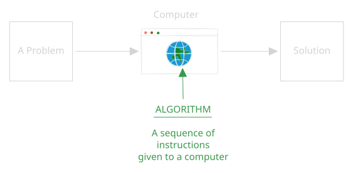
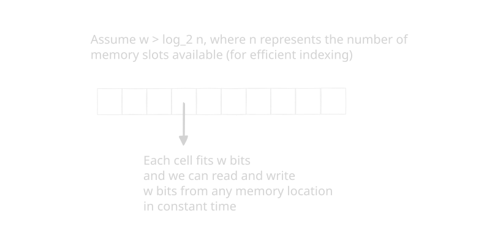

Learning Outcomes:
- Models of Computation
- Comfortably be able to read statements involving Big-O notation in research papers.
- Performance of Algorithms
Notation
We use $[n]$ to denote $\{ 1, 2, \ldots, n\}$.
What Is This Course Really About?
A course on Algorithms is really about problem solving. More particularly, it is about understanding how a computer solves problems. Loosely, an algorithm is merely a sequence of instructions that our computer understands and uses to solve the problem at hand.

Let’s make things a little more concrete. Say you arrive at Hyde Park with a map of London’s tube network, and you want to figure out how to get to Richmond Park. This is your problem. You pull out your phone (your pocket-sized computer), type things into Google Maps, and out comes a set of directions. That is our solution. The developers at Google programmed your phone with the Google Maps algorithm that allows you to enter any destination and spits out a route to get there.
As a person trying to understand algorithms, some questions immediately jump out at us.
- Did the route actually get us to Richmond, i.e., was the algorithm correct?
- Was it sometimes correct and sometimes not, i.e., was randomness used?
- Did the algorithm take a long time to give us a correct solution, i.e., is the algorithm efficient?
- Is there a better way to get to Richmond, i.e., is this algorithm competitive?
In this course you will play the role of the algorithm designer and answer such questions. Before you can do this, we must first learn how to express these questions in a mathematically precise manner. For that we must understand asymptotic notation.
Asymptotics
In your undergraduate algorithms class, you must have read results saying that the time complexity of finding the largest number in a list of $n$ integers is $O(n)$. Or that finding a path between two nodes in an undirected graph $G=(V,E)$ takes time $O(|V| + 2|E|)$. To communicate the results of any kind of analysis we do in this class, we have to get comfortable with what these statements mean.
As an example, consider the sum of the first $n$ natural numbers. We often see the result expressed this way.
\begin{align*} \sum_{i=1}^n i &= n(n+1)/2 \\ &= n^2/2 + n/2 = O(n^2) \end{align*}
The comparison-based sorting example below exemplifies how to use the above definition.
Going back to the example of summing $n$ natural numbers, we often write \begin{align*} \sum_{i=1}^n i &= n(n+1)/2 \\ &= n^2/2(1 + o(1)) j \end{align*}
to say $n^2$ is a good approximation of the sum, as the product term goes to 1 when $n$ tends to infinity. We also have the equivalent version for strictly greater than.
Other Things You Might See
Often you will see people write $f(n) = \operatorname{poly}(n)$. What they mean here is that $f(n) = g(n)^{O(1)}$. Or more simply, $f(n)$ can be expressed as a polynomial in $g(n)$.
Sometimes you will also see people write $f(n) = \widetilde{O}(g(n))$, and what they really mean is $f(n) = g(n)\operatorname{poly}(\log n)$. Intuitively, we are saying $f(n)$ is pretty much $g(n)$ and a little extra, but that little extra is a log factor, so it’s insignificant compared to $g(n)$.
For example, $n^4(\log n)^3 = \widetilde{O}(n^4)$. The tilde lets us hide the logarithmic factor. Note that if you see a tilde, it does not always hide a power of $\log n$. For example, $3^n n^5 = \widetilde{O}(3^n)$, since $\log(3^n) = n \log 3$, so $n^5$ is a polylogarithmic factor in $3^n$.
Models Of Computation
We were deliberately vague about what a computer is earlier. In this course we will discuss 3 models of computation.
- The Turing Machine
- Circuits
- Word RAM model.
To understand why being specific about this matters, we start with a simple problem. Sort a list of $n$ integers? What do you reckon is the sorting time of that algorithm? Again, from your undergraduate years you might remember it is $\Omega( n \log n)$. You might have also seen the following argument. The following definition is from Blum’s lecture notes.
So this algorithm does not scan the input values or do anything clever. It decides a sequence of questions it must ask. For example, its first query might be is the item at position 4 smaller than the item in position 9. Based on whether the answer was YES or NO, it might then ask is the item in position 6 smaller than the item in position 9. It goes on asking questions, receiving answers and reordering the input till it outputs a permutation function $\pi : [n] \rightarrow [n]$ that tells us how we can sort the input. A permutation $\pi$ moves the element $a_i$ from position $i$ in the input to position $\pi(i)$ in the final output. Note that the logic for the next question is given by some deterministic function that uses as input the previous questions and previous answers.
But this analysis holds in this weird only comparisons are expensive model. We will actually show that in the model most algorithm designers prefer, which is called the Word-RAM model, the time complexity of sorting $n$ integers is remarkably $O(n)$. But before we get to the Word-RAM model, we start with one of the earliest formal definitions of a computer: the Turing machine.
Turing Machine
This was one of the first models of a computer, and it has been studied extensively in computer science.

Why Do We Like This Model?
It is extremely unambiguous what the space and time complexities are. It’s quite literally the number of times we invoke the transition function. The space is the total number of cells we used barring the input alphabets.
Why Do We Not Like It So Much?
While it’s really useful for analysing things precisely, it’s also painful in some cases.
To demonstrate this, let’s work through the following example.
Given a bit string of length $n$, what is the time complexity of deciding whether it is a palindrome?
A string is a palindrome if reversing the string does not change the string.
For example, 1001 is a palindrome. 1011 is not.
From your undergraduate courses, you might claim it’s $\theta(n)$.
You could code this problem up in your favourite programming language, and plot the answer for different values of $n$.
You might see linear plots.
Now, it is known that for a deterministic one-tape Turing machine, deciding whether a binary string of length $n$ is a palindrome takes $\Omega(n^2)$ transitions in the worst case. This follows from F. C. Hennie’s 1965 crossing-sequence lower-bound work. In Problem Set 1, you will be asked to design a deterministic one-tape Turing machine that decides palindromes in $O(n^2)$ time.
We won’t say too much more about Turing machines till we get to the complexity theory part of the course. For now we will move on to circuits, an equally well studied model of computation.
Circuits
We won’t cover circuits in detail in this class, but it is also a very popular model of a computer. Refer to Ryan O’Donnell’s lecture on circuits if you are interested.
Word RAM
This model is more akin to a C or assembly program. You have memory where each cell is $w$ bits wide. If $n$ is the size of the problem, e.g., an array of size $n$ with each cell containing a number between 0 and $k-1$, then we normally assume $w \geq \log_2 \max\left\{k+1, n+1\right\}$. This allows us to basically express a pointer to an array location with $w$ bits and index into the addressed store by the pointer in constant time.

The precise definition is quite a mouthful, but it’s given here in the Harvard CS125 lecture notes, Section 6.1 if you are interested.
Roughly, this model says that things for which you have assembly instructions are constant time. Things like
- Addition and subtraction modulo $2^w$.
- Left and right shifts.
- AND, NOT, OR operations.
- Reading and writing $w$ bits to memory.
- Testing whether a number is greater than or equal to 0, and so on.
In this course, for the first part at least, we will be using this definition of a computer to do analysis. Take, for example, the following program:
def sum(a : list[int])->int:
total = 0
for i in range(len(a)):
total += a[i]
return totalHere, it takes $w$ bits to store $i$, so the time is $O(1)$. The total takes $2w$ bits, as the sum can overflow, but that’s $O(1)$. We do $n$ basic operations, so the run time is $O(n)$. The space complexity is $O(1)$, as we do not include the space needed to store $a$ in the analysis.
Now we will cover the sorting algorithm that takes $O(n)$ time in the next class, but here is the algorithm if you’re curious. Try and show this takes time $O(n)$. Try and understand the space complexity of the algorithm.